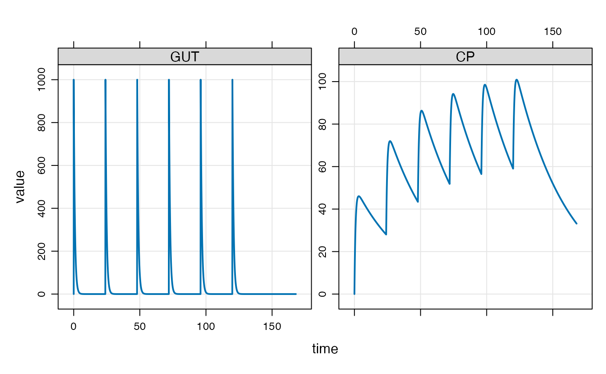

mrgsolve is an R package maintained under the auspices of Metrum Research Group, LLC, that facilitates simulation from models based on systems of ordinary differential equations (ODE) that are typically employed for understanding pharmacokinetics, pharmacodynamics, and systems biology and pharmacology. mrgsovle consists of computer code written in the R and C++ languages, providing an interface to the DLSODA differential equation solver (written in FORTRAN) provided through ODEPACK - A Systematized Collection of ODE Solvers.
Input data sets
See data_set for help creating input data sets.
See exdatasets for example input data sets.
Package help
About the model object
The model object has class mrgmod.
Handling simulated output
See mrgsims for methods to use with simulated output.
About the solver used by mrgsolve
See: aboutsolver
Examples
## example("mrgsolve") mod <- mrgsolve:::house(delta=0.1) %>% param(CL=0.5) events <- ev(amt=1000, cmt=1, addl=5, ii=24) events#> Events: #> time cmt amt addl ii evid #> 1 0 1 1000 5 24 1mod#> #> #> -------- mrgsolve model object (unix) -------- #> Project: /Users/kyleb/git...e/pkg/project #> source: housemodel.cpp #> shared object: mrgsolve #> #> Time: start: 0 end: 120 delta: 0.1 #> > add: <none> #> > tscale: 1 #> #> Compartments: GUT CENT RESP [3] #> Parameters: CL VC KA F1 WT SEX #> > WTCL WTVC SEXCL SEXVC KIN KOUT #> > IC50 [13] #> Omega: 4x4 #> Sigma: 1x1 #> #> Solver: atol: 1e-08 rtol: 1e-08 #> > maxsteps: 2000 hmin: 0 hmax: 0 #>see(mod)#> #> Model file: housemodel.cpp #> $PROB #> #> # `mrgsolve` housemodel #> #> This model is compiled with `mrgsolve`. #> #> - Author: Metrum Research Group, LLC #> - Description: Generic indirect response PK/PD model #> - Covariates: Weight, female sex #> - Random effects: CL, VC, KA, KOUT #> - Error model: exponential #> #> #> #> $PLUGIN base #> #> $PARAM @annotated #> CL : 1 : Clearance (L/hr) #> VC : 20 : Volume of distribution (L) #> KA : 1.2 : Absorption rate constant (1/hr) #> F1 : 1.0 : Bioavailability fraction (.) #> WT : 70 : Weight (kg) #> SEX : 0 : Covariate female sex #> WTCL : 0.75 : Exponent WT on CL #> WTVC : 1.00 : Exponent WT on VC #> SEXCL: 0.7 : Prop cov effect on CL #> SEXVC: 0.85 : Prop cov effect on VC #> KIN : 100 : Resp prod rate constant (1/hr) #> KOUT : 2 : Resp elim rate constant (1/hr) #> IC50 : 10 : Conc giving 50% max resp (ng/ml) #> #> $CMT @annotated #> GUT : Dosing compartment (mg) #> CENT : Central compartment (mg) #> RESP : Response (unitless) #> #> $OMEGA @labels ECL EVC EKA EKOUT #> 0 0 0 0 #> #> $SIGMA @labels EXPO #> 0 #> #> $SET end=120, delta=0.25 #> #> #> $GLOBAL #> #define CP (CENT/VCi) #> #define INH (CP/(IC50+CP)) #> #> typedef double localdouble; #> #> $MAIN #> F_GUT = F1; #> #> double CLi = exp(log(CL) + WTCL*log(WT/70) + log(SEXCL)*SEX + ECL); #> double VCi = exp(log(VC) + WTVC*log(WT/70) + log(SEXVC)*SEX + EVC); #> double KAi = exp(log(KA) + EKA); #> double KOUTi = exp(log(KOUT) + EKOUT); #> #> RESP_0 = KIN/KOUTi; #> #> $ODE #> dxdt_GUT = -KAi*GUT; #> dxdt_CENT = KAi*GUT - (CLi/VCi)*CENT; #> dxdt_RESP = KIN*(1-INH) - KOUTi*RESP; #> #> $TABLE #> double DV = CP*exp(EXPO); #> #> $CAPTURE @annotated #> DV: Dependent variable (ng/ml) #> CP: Plasma concentration (ng/ml) #>stime(mod)#> [1] 0.0 0.1 0.2 0.3 0.4 0.5 0.6 0.7 0.8 0.9 1.0 1.1 #> [13] 1.2 1.3 1.4 1.5 1.6 1.7 1.8 1.9 2.0 2.1 2.2 2.3 #> [25] 2.4 2.5 2.6 2.7 2.8 2.9 3.0 3.1 3.2 3.3 3.4 3.5 #> [37] 3.6 3.7 3.8 3.9 4.0 4.1 4.2 4.3 4.4 4.5 4.6 4.7 #> [49] 4.8 4.9 5.0 5.1 5.2 5.3 5.4 5.5 5.6 5.7 5.8 5.9 #> [61] 6.0 6.1 6.2 6.3 6.4 6.5 6.6 6.7 6.8 6.9 7.0 7.1 #> [73] 7.2 7.3 7.4 7.5 7.6 7.7 7.8 7.9 8.0 8.1 8.2 8.3 #> [85] 8.4 8.5 8.6 8.7 8.8 8.9 9.0 9.1 9.2 9.3 9.4 9.5 #> [97] 9.6 9.7 9.8 9.9 10.0 10.1 10.2 10.3 10.4 10.5 10.6 10.7 #> [109] 10.8 10.9 11.0 11.1 11.2 11.3 11.4 11.5 11.6 11.7 11.8 11.9 #> [121] 12.0 12.1 12.2 12.3 12.4 12.5 12.6 12.7 12.8 12.9 13.0 13.1 #> [133] 13.2 13.3 13.4 13.5 13.6 13.7 13.8 13.9 14.0 14.1 14.2 14.3 #> [145] 14.4 14.5 14.6 14.7 14.8 14.9 15.0 15.1 15.2 15.3 15.4 15.5 #> [157] 15.6 15.7 15.8 15.9 16.0 16.1 16.2 16.3 16.4 16.5 16.6 16.7 #> [169] 16.8 16.9 17.0 17.1 17.2 17.3 17.4 17.5 17.6 17.7 17.8 17.9 #> [181] 18.0 18.1 18.2 18.3 18.4 18.5 18.6 18.7 18.8 18.9 19.0 19.1 #> [193] 19.2 19.3 19.4 19.5 19.6 19.7 19.8 19.9 20.0 20.1 20.2 20.3 #> [205] 20.4 20.5 20.6 20.7 20.8 20.9 21.0 21.1 21.2 21.3 21.4 21.5 #> [217] 21.6 21.7 21.8 21.9 22.0 22.1 22.2 22.3 22.4 22.5 22.6 22.7 #> [229] 22.8 22.9 23.0 23.1 23.2 23.3 23.4 23.5 23.6 23.7 23.8 23.9 #> [241] 24.0 24.1 24.2 24.3 24.4 24.5 24.6 24.7 24.8 24.9 25.0 25.1 #> [253] 25.2 25.3 25.4 25.5 25.6 25.7 25.8 25.9 26.0 26.1 26.2 26.3 #> [265] 26.4 26.5 26.6 26.7 26.8 26.9 27.0 27.1 27.2 27.3 27.4 27.5 #> [277] 27.6 27.7 27.8 27.9 28.0 28.1 28.2 28.3 28.4 28.5 28.6 28.7 #> [289] 28.8 28.9 29.0 29.1 29.2 29.3 29.4 29.5 29.6 29.7 29.8 29.9 #> [301] 30.0 30.1 30.2 30.3 30.4 30.5 30.6 30.7 30.8 30.9 31.0 31.1 #> [313] 31.2 31.3 31.4 31.5 31.6 31.7 31.8 31.9 32.0 32.1 32.2 32.3 #> [325] 32.4 32.5 32.6 32.7 32.8 32.9 33.0 33.1 33.2 33.3 33.4 33.5 #> [337] 33.6 33.7 33.8 33.9 34.0 34.1 34.2 34.3 34.4 34.5 34.6 34.7 #> [349] 34.8 34.9 35.0 35.1 35.2 35.3 35.4 35.5 35.6 35.7 35.8 35.9 #> [361] 36.0 36.1 36.2 36.3 36.4 36.5 36.6 36.7 36.8 36.9 37.0 37.1 #> [373] 37.2 37.3 37.4 37.5 37.6 37.7 37.8 37.9 38.0 38.1 38.2 38.3 #> [385] 38.4 38.5 38.6 38.7 38.8 38.9 39.0 39.1 39.2 39.3 39.4 39.5 #> [397] 39.6 39.7 39.8 39.9 40.0 40.1 40.2 40.3 40.4 40.5 40.6 40.7 #> [409] 40.8 40.9 41.0 41.1 41.2 41.3 41.4 41.5 41.6 41.7 41.8 41.9 #> [421] 42.0 42.1 42.2 42.3 42.4 42.5 42.6 42.7 42.8 42.9 43.0 43.1 #> [433] 43.2 43.3 43.4 43.5 43.6 43.7 43.8 43.9 44.0 44.1 44.2 44.3 #> [445] 44.4 44.5 44.6 44.7 44.8 44.9 45.0 45.1 45.2 45.3 45.4 45.5 #> [457] 45.6 45.7 45.8 45.9 46.0 46.1 46.2 46.3 46.4 46.5 46.6 46.7 #> [469] 46.8 46.9 47.0 47.1 47.2 47.3 47.4 47.5 47.6 47.7 47.8 47.9 #> [481] 48.0 48.1 48.2 48.3 48.4 48.5 48.6 48.7 48.8 48.9 49.0 49.1 #> [493] 49.2 49.3 49.4 49.5 49.6 49.7 49.8 49.9 50.0 50.1 50.2 50.3 #> [505] 50.4 50.5 50.6 50.7 50.8 50.9 51.0 51.1 51.2 51.3 51.4 51.5 #> [517] 51.6 51.7 51.8 51.9 52.0 52.1 52.2 52.3 52.4 52.5 52.6 52.7 #> [529] 52.8 52.9 53.0 53.1 53.2 53.3 53.4 53.5 53.6 53.7 53.8 53.9 #> [541] 54.0 54.1 54.2 54.3 54.4 54.5 54.6 54.7 54.8 54.9 55.0 55.1 #> [553] 55.2 55.3 55.4 55.5 55.6 55.7 55.8 55.9 56.0 56.1 56.2 56.3 #> [565] 56.4 56.5 56.6 56.7 56.8 56.9 57.0 57.1 57.2 57.3 57.4 57.5 #> [577] 57.6 57.7 57.8 57.9 58.0 58.1 58.2 58.3 58.4 58.5 58.6 58.7 #> [589] 58.8 58.9 59.0 59.1 59.2 59.3 59.4 59.5 59.6 59.7 59.8 59.9 #> [601] 60.0 60.1 60.2 60.3 60.4 60.5 60.6 60.7 60.8 60.9 61.0 61.1 #> [613] 61.2 61.3 61.4 61.5 61.6 61.7 61.8 61.9 62.0 62.1 62.2 62.3 #> [625] 62.4 62.5 62.6 62.7 62.8 62.9 63.0 63.1 63.2 63.3 63.4 63.5 #> [637] 63.6 63.7 63.8 63.9 64.0 64.1 64.2 64.3 64.4 64.5 64.6 64.7 #> [649] 64.8 64.9 65.0 65.1 65.2 65.3 65.4 65.5 65.6 65.7 65.8 65.9 #> [661] 66.0 66.1 66.2 66.3 66.4 66.5 66.6 66.7 66.8 66.9 67.0 67.1 #> [673] 67.2 67.3 67.4 67.5 67.6 67.7 67.8 67.9 68.0 68.1 68.2 68.3 #> [685] 68.4 68.5 68.6 68.7 68.8 68.9 69.0 69.1 69.2 69.3 69.4 69.5 #> [697] 69.6 69.7 69.8 69.9 70.0 70.1 70.2 70.3 70.4 70.5 70.6 70.7 #> [709] 70.8 70.9 71.0 71.1 71.2 71.3 71.4 71.5 71.6 71.7 71.8 71.9 #> [721] 72.0 72.1 72.2 72.3 72.4 72.5 72.6 72.7 72.8 72.9 73.0 73.1 #> [733] 73.2 73.3 73.4 73.5 73.6 73.7 73.8 73.9 74.0 74.1 74.2 74.3 #> [745] 74.4 74.5 74.6 74.7 74.8 74.9 75.0 75.1 75.2 75.3 75.4 75.5 #> [757] 75.6 75.7 75.8 75.9 76.0 76.1 76.2 76.3 76.4 76.5 76.6 76.7 #> [769] 76.8 76.9 77.0 77.1 77.2 77.3 77.4 77.5 77.6 77.7 77.8 77.9 #> [781] 78.0 78.1 78.2 78.3 78.4 78.5 78.6 78.7 78.8 78.9 79.0 79.1 #> [793] 79.2 79.3 79.4 79.5 79.6 79.7 79.8 79.9 80.0 80.1 80.2 80.3 #> [805] 80.4 80.5 80.6 80.7 80.8 80.9 81.0 81.1 81.2 81.3 81.4 81.5 #> [817] 81.6 81.7 81.8 81.9 82.0 82.1 82.2 82.3 82.4 82.5 82.6 82.7 #> [829] 82.8 82.9 83.0 83.1 83.2 83.3 83.4 83.5 83.6 83.7 83.8 83.9 #> [841] 84.0 84.1 84.2 84.3 84.4 84.5 84.6 84.7 84.8 84.9 85.0 85.1 #> [853] 85.2 85.3 85.4 85.5 85.6 85.7 85.8 85.9 86.0 86.1 86.2 86.3 #> [865] 86.4 86.5 86.6 86.7 86.8 86.9 87.0 87.1 87.2 87.3 87.4 87.5 #> [877] 87.6 87.7 87.8 87.9 88.0 88.1 88.2 88.3 88.4 88.5 88.6 88.7 #> [889] 88.8 88.9 89.0 89.1 89.2 89.3 89.4 89.5 89.6 89.7 89.8 89.9 #> [901] 90.0 90.1 90.2 90.3 90.4 90.5 90.6 90.7 90.8 90.9 91.0 91.1 #> [913] 91.2 91.3 91.4 91.5 91.6 91.7 91.8 91.9 92.0 92.1 92.2 92.3 #> [925] 92.4 92.5 92.6 92.7 92.8 92.9 93.0 93.1 93.2 93.3 93.4 93.5 #> [937] 93.6 93.7 93.8 93.9 94.0 94.1 94.2 94.3 94.4 94.5 94.6 94.7 #> [949] 94.8 94.9 95.0 95.1 95.2 95.3 95.4 95.5 95.6 95.7 95.8 95.9 #> [961] 96.0 96.1 96.2 96.3 96.4 96.5 96.6 96.7 96.8 96.9 97.0 97.1 #> [973] 97.2 97.3 97.4 97.5 97.6 97.7 97.8 97.9 98.0 98.1 98.2 98.3 #> [985] 98.4 98.5 98.6 98.7 98.8 98.9 99.0 99.1 99.2 99.3 99.4 99.5 #> [997] 99.6 99.7 99.8 99.9 100.0 100.1 100.2 100.3 100.4 100.5 100.6 100.7 #> [1009] 100.8 100.9 101.0 101.1 101.2 101.3 101.4 101.5 101.6 101.7 101.8 101.9 #> [1021] 102.0 102.1 102.2 102.3 102.4 102.5 102.6 102.7 102.8 102.9 103.0 103.1 #> [1033] 103.2 103.3 103.4 103.5 103.6 103.7 103.8 103.9 104.0 104.1 104.2 104.3 #> [1045] 104.4 104.5 104.6 104.7 104.8 104.9 105.0 105.1 105.2 105.3 105.4 105.5 #> [1057] 105.6 105.7 105.8 105.9 106.0 106.1 106.2 106.3 106.4 106.5 106.6 106.7 #> [1069] 106.8 106.9 107.0 107.1 107.2 107.3 107.4 107.5 107.6 107.7 107.8 107.9 #> [1081] 108.0 108.1 108.2 108.3 108.4 108.5 108.6 108.7 108.8 108.9 109.0 109.1 #> [1093] 109.2 109.3 109.4 109.5 109.6 109.7 109.8 109.9 110.0 110.1 110.2 110.3 #> [1105] 110.4 110.5 110.6 110.7 110.8 110.9 111.0 111.1 111.2 111.3 111.4 111.5 #> [1117] 111.6 111.7 111.8 111.9 112.0 112.1 112.2 112.3 112.4 112.5 112.6 112.7 #> [1129] 112.8 112.9 113.0 113.1 113.2 113.3 113.4 113.5 113.6 113.7 113.8 113.9 #> [1141] 114.0 114.1 114.2 114.3 114.4 114.5 114.6 114.7 114.8 114.9 115.0 115.1 #> [1153] 115.2 115.3 115.4 115.5 115.6 115.7 115.8 115.9 116.0 116.1 116.2 116.3 #> [1165] 116.4 116.5 116.6 116.7 116.8 116.9 117.0 117.1 117.2 117.3 117.4 117.5 #> [1177] 117.6 117.7 117.8 117.9 118.0 118.1 118.2 118.3 118.4 118.5 118.6 118.7 #> [1189] 118.8 118.9 119.0 119.1 119.2 119.3 119.4 119.5 119.6 119.7 119.8 119.9 #> [1201] 120.0param(mod)#> #> Model parameters (N=13): #> name value . name value #> CL 0.5 | SEXCL 0.7 #> F1 1 | SEXVC 0.85 #> IC50 10 | VC 20 #> KA 1.2 | WT 70 #> KIN 100 | WTCL 0.75 #> KOUT 2 | WTVC 1 #> SEX 0 | . .init(mod)#> #> Model initial conditions (N=3): #> name value . name value #> CENT (2) 0 | RESP (3) 50 #> GUT (1) 0 | . ... .#> Model: housemodel #> Dim: 1682 x 7 #> Time: 0 to 168 #> ID: 1 #> ID time GUT CENT RESP DV CP #> [1,] 1 0.0 0.0 0.0 50.00 0.000 0.000 #> [2,] 1 0.0 1000.0 0.0 50.00 0.000 0.000 #> [3,] 1 0.1 886.9 112.9 48.04 5.647 5.647 #> [4,] 1 0.2 786.6 212.8 44.32 10.641 10.641 #> [5,] 1 0.3 697.7 301.1 40.24 15.056 15.056 #> [6,] 1 0.4 618.8 379.2 36.30 18.958 18.958 #> [7,] 1 0.5 548.8 448.1 32.67 22.405 22.405 #> [8,] 1 0.6 486.8 509.0 29.41 25.448 25.448head(out)#> ID time GUT CENT RESP DV CP #> 1 1 0.0 0.0000 0.0000 50.00000 0.000000 0.000000 #> 2 1 0.0 1000.0000 0.0000 50.00000 0.000000 0.000000 #> 3 1 0.1 886.9204 112.9355 48.03655 5.646775 5.646775 #> 4 1 0.2 786.6279 212.8183 44.31899 10.640917 10.640917 #> 5 1 0.3 697.6763 301.1252 40.24379 15.056258 15.056258 #> 6 1 0.4 618.7834 379.1657 36.29753 18.958286 18.958286tail(out)#> Model: housemodel#> ID time GUT CENT RESP DV CP #> 1677 1 167.5 1.218836e-22 671.4739 11.36504 33.57369 33.57369 #> 1678 1 167.6 1.077787e-22 669.7973 11.38701 33.48987 33.48987 #> 1679 1 167.7 9.538413e-23 668.1249 11.40901 33.40625 33.40625 #> 1680 1 167.8 8.441714e-23 666.4567 11.43104 33.32283 33.32283 #> 1681 1 167.9 7.466548e-23 664.7926 11.45310 33.23963 33.23963 #> 1682 1 168.0 6.610140e-23 663.1327 11.47519 33.15664 33.15664dim(out)#> [1] 1682 7plot(out, GUT+CP~.)sims <- as.data.frame(out) t72 <- subset(sims, time==72) str(t72)#> 'data.frame': 1 obs. of 7 variables: #> $ ID : num 1 #> $ time: num 72 #> $ GUT : num 1000 #> $ CENT: num 1037 #> $ RESP: num 8 #> $ DV : num 51.8 #> $ CP : num 51.8idata <- data.frame(ID=c(1,2,3), CL=c(0.5,1,2),VC=12) out <- mod %>% ev(events) %>% mrgsim(end=168, idata=idata, req="") plot(out)#> ID time evid amt cmt GUT CENT RESP DV CP #> 1 1 0.0 0 0 0 0.0000 0.0000 50.00000 0.000000 0.000000 #> 2 1 0.0 1 1000 1 1000.0000 0.0000 50.00000 0.000000 0.000000 #> 3 1 0.1 0 0 0 886.9204 112.9355 48.03655 5.646775 5.646775 #> 4 1 0.2 0 0 0 786.6279 212.8183 44.31899 10.640917 10.640917 #> 5 1 0.3 0 0 0 697.6763 301.1252 40.24379 15.056258 15.056258 #> 6 1 0.4 0 0 0 618.7834 379.1657 36.29753 18.958286 18.958286out <- mod %>% ev() %>% knobs(CL=c(0.5, 1,2), amt=c(100,300,1000), cmt=1,end=48) plot(out, CP~., scales="same")plot(out, RESP+CP~time|amt,groups=CL)ev1 <- ev(amt=500, cmt=2,rate=10) ev2 <- ev(amt=100, cmt=1, time=54, ii=8, addl=10) events <- ev1+ev2 events#> Events: #> time cmt amt rate evid ii addl #> 1 0 2 500 10 1 0 0 #> 2 54 1 100 0 1 8 10## "Condensed" data set data(extran1) extran1#> ID amt cmt time addl ii rate evid #> 1 1 1000 1 0 3 24 0 1 #> 2 2 1000 2 0 0 0 20 1 #> 3 3 1000 1 0 0 0 0 1 #> 4 3 500 1 24 0 0 0 1 #> 5 3 500 1 48 0 0 0 1 #> 6 3 1000 1 72 0 0 0 1 #> 7 4 2000 2 0 2 48 100 1 #> 8 5 1000 1 0 0 0 0 1 #> 9 5 5000 1 24 0 0 60 1## idata data(exidata) exidata#> ID CL VC KA KOUT IC50 FOO #> 1 1 1.050 47.80 0.8390 2.450 1.280 4 #> 2 2 0.730 30.10 0.0684 2.510 1.840 6 #> 3 3 2.820 23.80 0.1180 3.880 2.480 5 #> 4 4 0.552 26.30 0.4950 1.180 0.977 2 #> 5 5 0.483 4.36 0.1220 2.350 0.483 10 #> 6 6 3.620 39.80 0.1260 1.890 4.240 1 #> 7 7 0.395 12.10 0.0317 1.250 0.802 8 #> 8 8 1.440 31.20 0.0931 4.030 1.310 7 #> 9 9 2.570 18.20 0.0570 0.862 1.950 3 #> 10 10 2.000 6.51 0.1540 3.220 0.699 9out <- mod %>% ev(amt=1000, cmt=1) %>% idata_set(exidata) %>% mrgsim(end=72) plot(out, CP~., as="log10")# Internal model library# NOT RUN { mod <- mread("irm1", modlib()) mod mod %>% ev(amt=300, ii=12, addl=3) %>% mrgsim # }